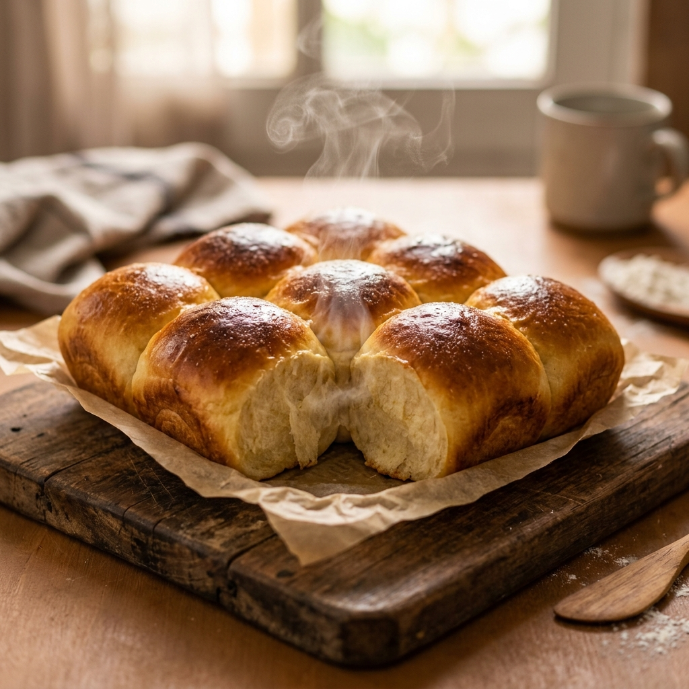
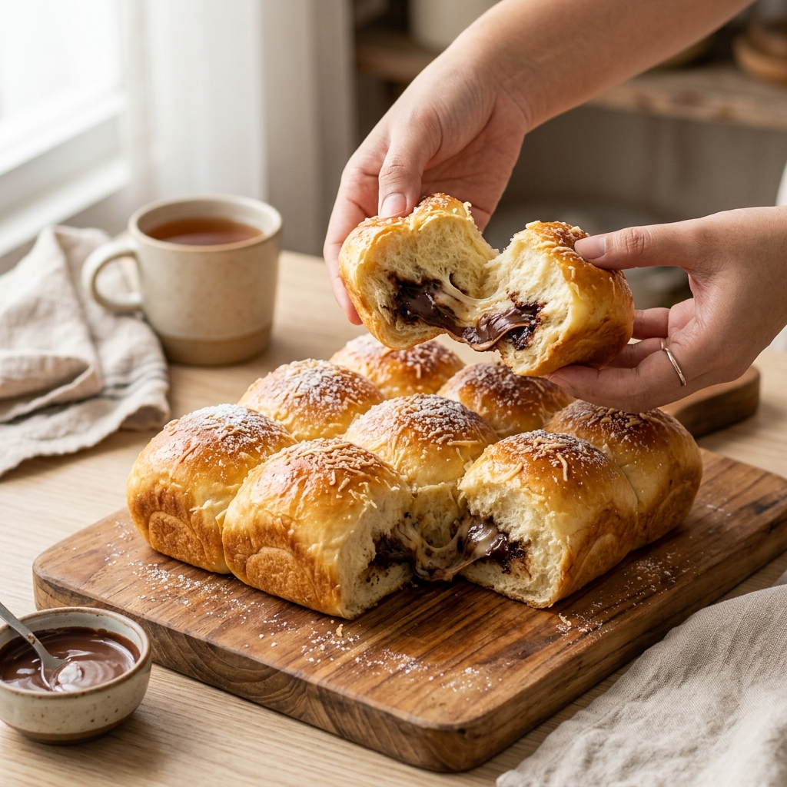

Dibuat segar setiap pagi dengan resep keluarga turun-temurun dan bahan-bahan premium pilihan untuk menghasilkan serat roti super lembut yang memanjakan lidah Anda.

Dipanggang Setiap Hari
Kami hanya menggunakan mentega berkualitas tinggi, susu segar, dan tepung terigu protein tinggi pilihan untuk rasa terbaik.
Roti kami dibuat murni tanpa bahan kimia tambahan atau pengawet makanan, menjadikannya aman dan sehat dikonsumsi keluarga.
Setiap adonan diuleni tangan (handcrafted) dengan ketelitian tinggi untuk menjaga keaslian tekstur lembut roti lokal.

MangWilBread dimulai dari kecintaan kami menyajikan hidangan roti berkualitas untuk keluarga sendiri. Terinspirasi oleh cita rasa roti manis klasik Indonesia yang sering kami nikmati di masa kecil, kami berkomitmen untuk menghidupkan kembali nostalgia tersebut dengan sentuhan modern.
Setiap resep telah melalui puluhan kali percobaan untuk menemukan keseimbangan tekstur yang berserat halus, empuk tahan lama (walau tanpa pengawet), serta tingkat kemanisan yang pas tidak bikin neg.
Nikmati kelembutan roti hangat kami langsung di depan pintu rumah Anda dengan 3 langkah praktis ini.
Lihat katalog menu kami di atas dan klik tombol "Pesan" pada roti yang Anda inginkan.
Anda akan dialihkan ke WhatsApp kami dengan format pesan otomatis. Tentukan jumlah dan alamat.
Roti dipanggang dan dikirim di hari yang sama melalui kurir instan (GrabExpress/GoSend) agar tetap hangat.
Kepuasan Anda adalah kebahagiaan kami. Berikut adalah pendapat jujur dari mereka yang telah mencoba roti kami.
"Roti sobek cokelat kejunya beneran selembut itu! Anaknya suka banget, apalagi cokelatnya lumer melimpah. Bakal jadi langganan buat sarapan pagi."
Ibu Rumah Tangga - Jakarta
"Sebagai pencinta roti jadul, roti keset mentega susu MangWilBread ini pas banget di lidah. Manisnya dapet, gurih menteganya wangi banget pas baru nyampe!"
Karyawan Swasta - Depok
"Roti abonnya juara! Abonnya tebel dan nggak pelit. Kombinasi mayonesnya juga pas gurih manis. Cocok banget buat nemenin kopi sore."
Freelancer - Tangerang
Temukan jawaban cepat mengenai pemesanan, ketahanan roti, dan jangkauan pengantaran kami.
Sama sekali tidak. Kami berkomitmen menyajikan roti sehat tanpa bahan pengawet kimia, pelembut buatan, maupun pewarna makanan sintetis.
Karena tidak memakai pengawet, roti kami tahan 3 hari di suhu ruang (tertutup rapat dalam plastik) atau hingga 7 hari jika disimpan di dalam wadah kedap udara di dalam kulkas.
Sebagian besar roti kami dibuat berdasarkan pesanan (*made by order*) agar Anda mendapatkan roti yang benar-benar fresh dari oven. Batas maksimal pemesanan adalah H-1 untuk dikirim keesokan paginya.
Kami melayani pengiriman area JABODETABEK menggunakan jasa kurir instan dan sameday (GoSend/GrabExpress/Shopee Express) untuk menjaga kesegaran roti.